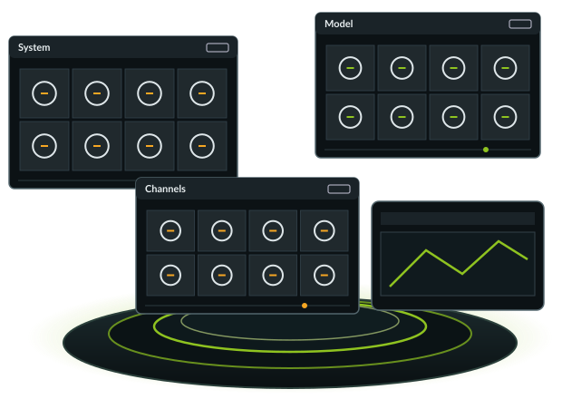
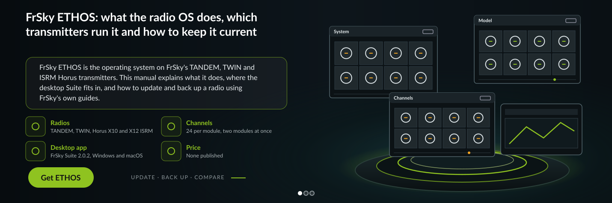
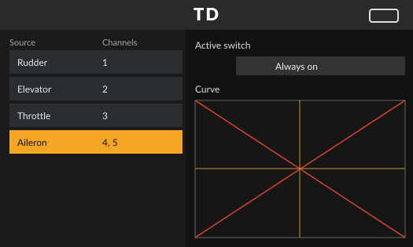
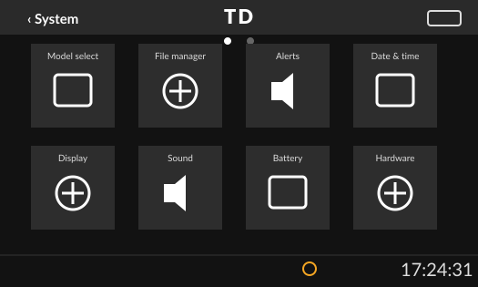
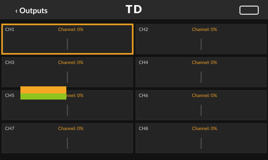
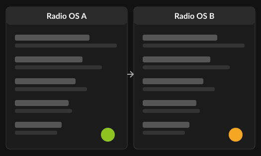

FrSky ETHOS: what the radio OS does, which transmitters run it and how to keep it current
FrSky ETHOS is the operating system on FrSky's TANDEM, TWIN and ISRM Horus transmitters. This manual explains what it does, where the desktop Suite fits in, and how to update and back up a radio using FrSky's own guides.
RadiosTANDEM, TWIN, Horus X10 and X12 ISRM
Channels24 per module, two modules at once
Desktop appFrSky Suite 2.0.2, Windows and macOS
PriceNone published


Pages in this manual
If you are deciding whether this system suits you, start with the ETHOS review. If you are still choosing hardware, the list of radios that run ETHOS shows which FrSky transmitters FrSky names in its FAQ and release notes.
Review
What the OS does well, where it falls short, and a score built on FrSky's documentation.
DownloadWhich FrSky Suite build fits your computer, installer sizes and the first steps after install.
Update firmwareThe Suite procedure: back up, write outdated components, flash the RF module, then the receivers.
Back up modelsModel manager in the Suite, or a manual copy of the models folder and radio.bin.
Supported radiosEvery transmitter FrSky names for the OS, and what the Suite needs on your computer.
TroubleshootingBlocked downloads, stalled updates, radios the Suite cannot see, and failed flashes.
ETHOS vs EdgeTXWho builds each one, which FrSky radios each runs on, and how to choose.
The radio OS

- VendorFrSky
- RadiosTANDEM, TWIN, Horus X10 and X12 ISRM
- Model typesAirplane, glider, helicopter, multirotor
- Channels24 per module, two modules at once
- Desktop appFrSky Suite 2.0.2, Windows and macOS
- PriceNone published
- Checked
Firmware, FrSky Suite and the manual are on FrSky's own site. No price is published.
What FrSky ETHOS is

This site is independent and is not run by FrSky. Download buttons lead to FrSky's official ETHOS site. FrSky publishes no price for ETHOS or FrSky Suite. Facts were read on ethos.frsky-rc.com and FrSky's GitHub on 7 November 2026.
ETHOS is FrSky's own operating system for its color screen transmitters: the TANDEM and TWIN series and the Horus X10 and X12 with the ISRM module. It handles model setup for airplanes, gliders, helicopters and multirotors, plus telemetry, voice call outs and Lua scripts. FrSky publishes no price for it; the firmware, the FrSky Suite desktop app and the manual are downloads on ethos.frsky-rc.com.
FrSky ETHOS is the firmware that runs the transmitter itself: the screens you set a model up in, the mixers, the telemetry pages and the sounds the radio plays when a sensor crosses a limit. FrSky builds it for its own radios and does not sell it as a separate product. The official site at ethos.frsky-rc.com collects the firmware, the desktop Suite, the user manual and the update guides. Release notes and bug reports live in a GitHub repository that FrSky runs.
The vendor groups the features into a few areas. Model setup has separate mixer templates for airplanes, gliders, helicopters and multirotors, with custom mixes on top. Telemetry and audio call outs come from FrSky receivers and sensors. Lua scripts add tools and widgets. Menus work by touch, with the keys or with the scroll wheel, and a simulator lets you try a setup on a computer. On the RF side, the internal module and a module in the external bay can run at the same time with 24 channels each.
Because the OS ships on the radio, most owners never install it from scratch. What they do is keep it current, keep RF module and receiver firmware matched to it, and keep a copy of their models on a computer. The rest of this manual covers those jobs.
Keeping a radio current

FrSky's update guide is built around the desktop Suite. You connect the radio with a USB C data cable, choose the Suite connection mode on the radio, and the Radio Information tab lists what is out of date. The guide insists on one step before anything is written: make a backup of your models in the Model manager tab.
The OS, the internal RF module and the receivers are three separate firmware layers. FrSky calls RF module and receiver firmware matched, so when one moves, check the other. Our guide on how to update ETHOS firmware step by step walks through all three in the order the vendor gives.
ETHOS or EdgeTX

The other firmware name you will meet is EdgeTX, an open source project backed by RadioMaster, Jumper, FlySky and HelloRadioSky. It lists older FrSky radios such as the X9D, X10 and X12S as community supported only, and does not list the X20, X18 or X14 families at all. The ETHOS vs EdgeTX comparison sets out where the two overlap and where only one of them is an option.
Current versions at a glance
FrSky now uses year based version numbers for the firmware. The 1.6 line that the manual and update guide describe has given way to the 26.x line in the GitHub releases. On 7 November 2026 the state was as follows.
| Component | Version | Note |
|---|---|---|
| ETHOS firmware | 26.1.2 | Latest GitHub release, dated 10 September |
| Next firmware | 26.2.0 RC9 | Release candidate, dated 6 November |
| FrSky Suite | 2.0.2 | Windows and macOS, dated 30 October |
| ETHOS Suite | 1.6.3 | Older generation, still listed on the site |
| User manual | 1.6.3 | PDF, English plus six other languages |
| Bootloader tool | DfuSe Demo 3.0.6 | Windows tool listed on the site |
The download page explains which Suite file fits your computer and what to check before you plug the radio in.
Frequently asked questions
Is FrSky ETHOS free?
FrSky publishes no price for ETHOS. The firmware, FrSky Suite and the user manual are offered as downloads on ethos.frsky-rc.com, and the OS comes installed on the radios that use it. The site does not state separate licence terms.
Which radios can run ETHOS?
FrSky's FAQ names the TANDEM and TWIN series and the Horus X10 and X12 series with the built in ISRM RF module. Recent release notes also name models such as the X20 PRO, X18RS, X14, X14RS and V15. Radios from other brands are not listed.
What is FrSky Suite?
FrSky Suite is the desktop app for Windows and macOS that updates the radio firmware and RF module, backs up models, installs Lua scripts and downloads receiver firmware. Version 2.0.2 also has a simulator, a log viewer and a DFU flasher. It replaces the older ETHOS Suite 1.6.3, which the site still lists.
Can ETHOS run on a RadioMaster or Jumper radio?
No. FrSky's pages list only FrSky transmitters. RadioMaster and Jumper are partners of the EdgeTX project, which is the firmware those radios use.
Is there an ETHOS simulator?
Yes. FrSky publishes simulator builds under a simulators tag in its GitHub releases, and FrSky Suite 2.0.2 includes a radio simulator. The wiki describes recording key and touch macros and running Lua scripts from the command line.
Where do I report an ETHOS bug?
FrSky collects bug reports as issues in its ETHOS Feedback Community repository on GitHub. It asks you to update first, search existing issues, and include the firmware version and steps to reproduce. The official site also has a support ticket system.
Sources
Get ETHOS and FrSky Suite
The firmware, the desktop Suite for Windows and macOS, and the 1.6.3 manual are on FrSky's official site. No price is published.
One radio OS from the radio maker. Update it with the Suite, and back it up before every flash.